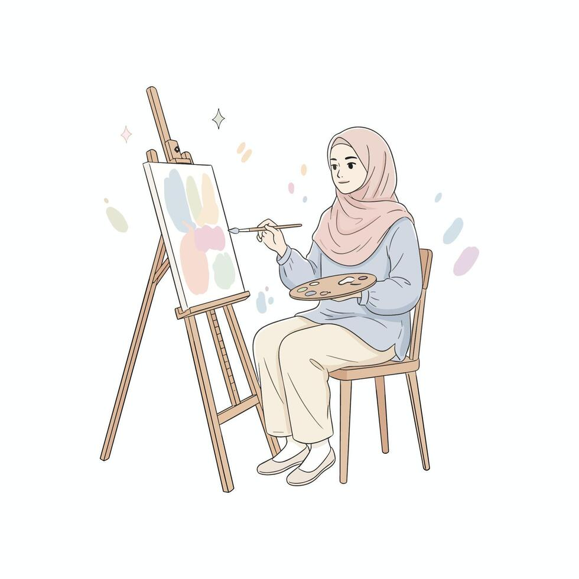

Welcome to my website

I failed over and over and over again in my life. And that is why I succeed.Michael Jordan
I failed over and over and over again in my life. And that is why I succeed.Michael Jordan
Tell me is there anything lovelier,
Anything more quieting
Than the green of little blades of grass
And the green of little leaves?
Brighter hues draw the eye,
While deep tones create depth,
Every brush stroke tells a story,
Captured on the canvas.

The poetry of earth is never dead,
When shadows fall on quiet trees,
And colors blend into the dusk,
In perfect harmony.

I love sketching and illustrating in my free time. It allows me to express my creativity on paper and bring my imagination to life.

Breathing life into characters through motion is incredibly rewarding. I enjoy experimenting with different animation software and creating short, dynamic sequences.

Capturing the world through a lens helps me appreciate the beauty in everyday moments. I usually focus on landscapes, portraits, and street photography.